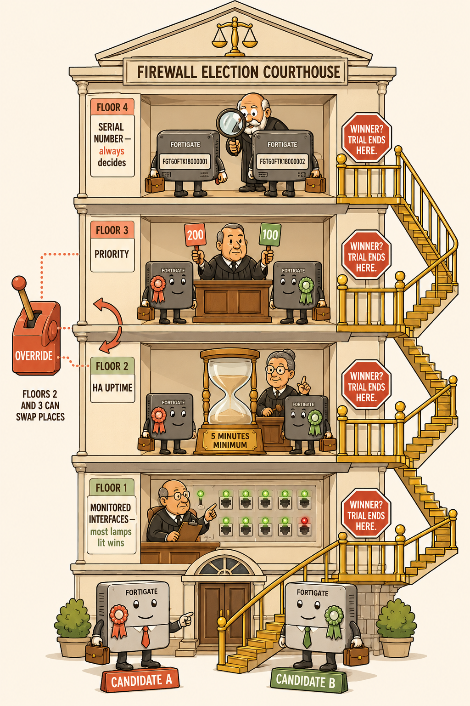
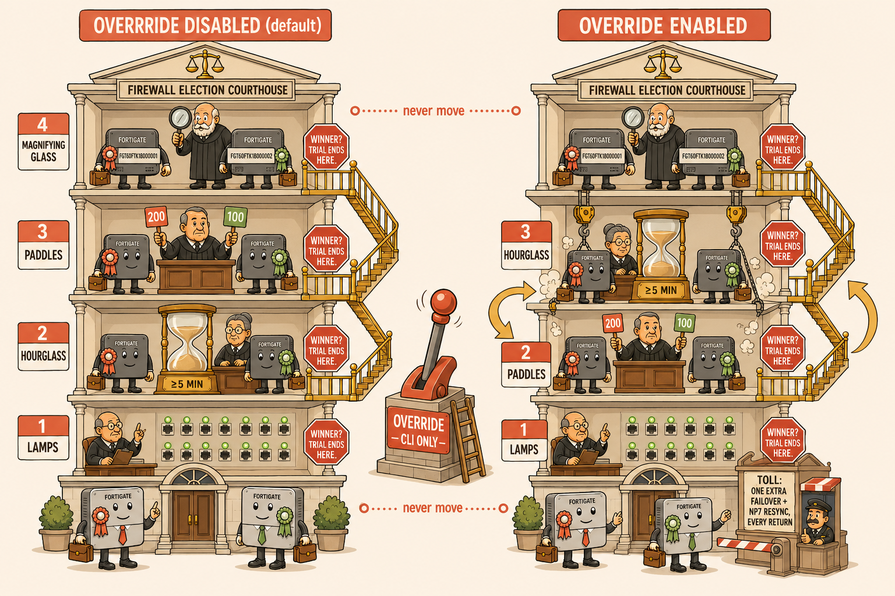

Why This Palace Exists
The FGCP primary election is an ordered waterfall of four criteria that stops at the first decisive one — and the override setting swaps the middle two floors. That's precisely the kind of ordered, positional knowledge a memory palace encodes best: rooms have fixed positions, and swapping two rooms is a vivid, memorable event. Walk this courthouse once, and reciting the election order — in either override mode — becomes a stroll, not a recall struggle.
The Mental Model
Two FortiGates — picture them as two suited candidates, Candidate A and Candidate B — enter a courthouse to settle who becomes primary. They climb floor by floor. On each floor, a judge applies one test. The instant a judge can pick a clear winner, the trial ends — nobody climbs further. Only a tie sends them up the stairs. On the top floor, a tie is impossible.

images/mp-courthouse-overview.png
📷 Image placeholder — generate separately using the prompt below
Flat minimalistic but highly detailed cartoon illustration, modern vector-art aesthetic, warm modern colour palette with cream background, coral accents, muted gold highlights, sage greens, and soft brown outlines. Clean bold line work, no gradients, no photorealism, no 3D. A tall four-storey courthouse shown in friendly cutaway cross-section, centred, generous spacing around it. Two cartoon FortiGate firewall appliances drawn as suited election candidates with little legs and briefcases — Candidate A wearing a coral rosette, Candidate B a sage rosette — standing at the entrance at the bottom, about to climb an external golden staircase connecting all four floors. FLOOR 1 (ground): a judge inspecting a wall of glowing green and one red network cable sockets, sign reading "MONITORED INTERFACES — most lamps lit wins". FLOOR 2: a judge beside an enormous hourglass with a brass plaque engraved "5 MINUTES MINIMUM", sign reading "HA UPTIME". FLOOR 3: a judge holding up two numbered paddles (200 vs 100), sign reading "PRIORITY". FLOOR 4 (top): a judge with a magnifying glass reading tiny serial-number labels on the candidates' backs, sign reading "SERIAL NUMBER — always decides". A large red STOP sign hangs on each landing with the words "WINNER? TRIAL ENDS HERE." On the outside wall between floors 2 and 3, a big coral lever labelled "OVERRIDE" connected by dotted lines to both floors, with curved swap-arrows showing the two floors exchanging places. Composition: front-on elevation view, each floor clearly labelled, characters expressive and slightly comedic, every object reinforcing one election criterion.
Walk the Floors (Override DISABLED — the default)
Floor 1 — Ground Floor
The Wall of Lamps (Monitored Interfaces)
The first judge stands before a wall of network sockets, each with a lamp: green = a monitored interface up, dark = down. The candidate with more lamps lit wins on the spot. Crucially, the wall only has lamps for interfaces someone installed — the wall is empty by default. If both candidates' walls match (including matching failures), it's a tie: up the stairs.
Floor 2
The Hourglass Room (HA Uptime)
The second judge sits beside a giant hourglass engraved "5 MINUTES MINIMUM." Each candidate carries a stopwatch counting continuous, healthy cluster membership — it slams back to zero on a reboot or when a lamp on Floor 1 goes dark. The judge only rules if one stopwatch leads by five full minutes or more. A 40-second lead? The judge shrugs — "too close to call" — and points at the stairs. That shrug is the exam trap: it's how a briefly-rebooted, higher-priority box slips upstairs and preempts.
Floor 3
The Paddle Room (Priority)
The third judge asks each candidate to raise a numbered paddle — the priority value an engineer wrote on it (default 128; never photocopied between candidates, since priority is never synced). Highest paddle wins. Equal paddles: one last flight of stairs.
Floor 4 — Top Floor
The Magnifying-Glass Room (Serial Number)
The final judge reads the serial number etched on each candidate's back. Highest serial wins — always. No two serials are equal, so the courthouse can never end in a hung jury. This floor exists so the building has a guaranteed exit.
The Override Lever
Outside Wall — Between Floors 2 & 3
Pull It, and the Floors Physically Swap
Bolted to the courthouse's outside wall is a big coral lever labelled OVERRIDE (reachable only by ladder — CLI only). Pull it, and with a great grinding of stone, Floor 2 and Floor 3 trade places: the Paddle Room drops below the Hourglass Room. Now priority is judged before uptime — so the candidate with the biggest paddle reclaims the primary role every single time it walks in the door healthy. The Lamps floor and the Magnifying-Glass floor never move.
The lever's price: a tollbooth at the courthouse exit charges the whole building a second failover — and a second NP7 resync — every time the preferred candidate returns. The lever must be pulled on each candidate's side of the wall separately (never synced).

images/mp-override-lever-swap.png
📷 Image placeholder — generate separately using the prompt below
Flat minimalistic but highly detailed cartoon illustration, modern vector-art aesthetic, warm palette: cream background, coral accents, muted gold highlights, sage greens, soft brown outlines, clean bold line work, no gradients, no photorealism, no 3D. Side-by-side comparison of the same four-storey cartoon courthouse. LEFT building labelled "OVERRIDE DISABLED (default)": floors from bottom to top read 1 LAMPS (wall of green interface lamps), 2 HOURGLASS (giant hourglass, plaque "≥5 MIN"), 3 PADDLES (judge with numbered paddles 200 and 100), 4 MAGNIFYING GLASS (serial numbers). RIGHT building labelled "OVERRIDE ENABLED": identical, except floors 2 and 3 have visibly swapped — the Paddle room now sits on floor 2 and the Hourglass room on floor 3, with crane hooks and dust clouds comically mid-swap, curved gold swap arrows between them. Between the two buildings, a large coral lever on a pedestal labelled "OVERRIDE — CLI ONLY", with a small ladder leaning against it. At the exit door of the right-hand building, a tiny tollbooth with a sign "TOLL: ONE EXTRA FAILOVER + NP7 RESYNC, EVERY RETURN". Floors 1 and 4 in both buildings connected by dotted lines labelled "never move". Clear readable labels, expressive cartoon judges, generous spacing, structured educational composition.
Key Takeaways
- Climb order (override off): Lamps → Hourglass (≥5 min) → Paddles → Magnifying glass. Override on: swap Hourglass ↔ Paddles. Floors 1 and 4 never move.
- The trial stops at the first decisive floor. Whatever is above the stopping floor is never consulted.
- The Hourglass judge's shrug (a lead under 5 minutes) is what lets a briefly-absent, higher-priority box preempt even with override off — and a long absence lets the survivor's hourglass lock the door.
- Stopwatches reset on reboot or a Floor-1 lamp going dark — uptime and interface monitoring are coupled.
- A dead-silent opponent means no trial at all: the surviving candidate checks its own lamps in the lobby and takes the oath unopposed.
Memory Hooks
💡
"Lamps, Hourglass, Paddles, Glass." Say it as you climb. Override = grab the middle two and swap them.
⏳
The hourglass only counts if it's five minutes ahead — otherwise the judge shrugs and you climb. The shrug IS the preemption trap.
🎚️
The lever is outside, up a ladder (CLI only), one per candidate (never synced), and the exit tollbooth always charges double (failback = second failover + second resync).
🔍
The top floor can't tie. Serial number is the building's fire escape — the election can never deadlock.
Exam notes: (1) "Override off, primary reboots, returns in 90 s with higher priority — who wins?" → the rebooted box, via Hourglass-shrug → Paddles. (2) "Returns after 6 min?" → the survivor, Hourglass decides, Paddles never consulted. (3) "Primary crashes, secondary has lower priority — takeover?" → yes, always: no rival, no trial. (4) Override changes criteria order, never criteria membership.